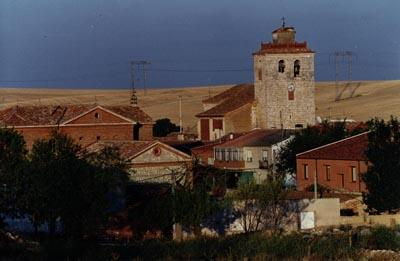
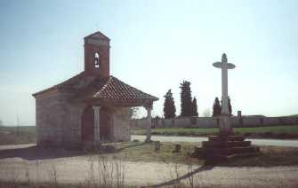
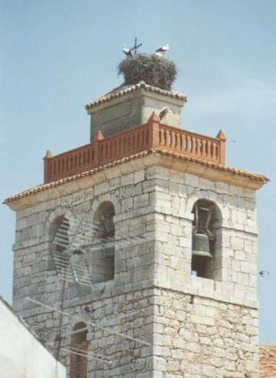

DETALLES CLAVE
🗓️
Fecha
27 DIC
⏰
Comienzo
16:30 H DESDE EL AYUNTAMIENTO
👥
Límite
100 Corredores
🎟️
Inscripciones
GRATIS Hasta el 26/12/2025 a las 12:00
DESCUBRE GERIA: TU CIRCUITO TE ESPERA

PANORÁMICA: EL RECORRIDO COMIENZA AQUÍ.

RINCONES CON HISTORIA EN EL TRAZADO.

LA META NOS ESPERA JUNTO AL CAMPANARIO.
DISTANCIAS Y CATEGORÍAS
PRUEBA ADULTOS (+/-5.000m)
- ⚡ SALIDA: 17:00 h.
- 🗺️ DISTANCIA: 5.000 metros (Una vuelta al circuito).
- 🤝 SOLIDARIDAD: Aportación voluntaria de alimentos no perecederos al recoger el dorsal.
❤️ RETO SOLIDARIO
Tu esfuerzo tiene recompensa doble. El principal objetivo es ayudar. Todo lo recaudado se entregará al BANCO DE ALIMENTOS DE VALLADOLID.
¡Corre, diviértete y colabora!
🎉 ...Y AL TERMINAR!!!
- 🏅**INFANTILES:** Detalle al cruzar la meta.
- **TODOS:** Invitados a una gran **SORPRESA FINAL** para reponer fuerzas tras la carrera.